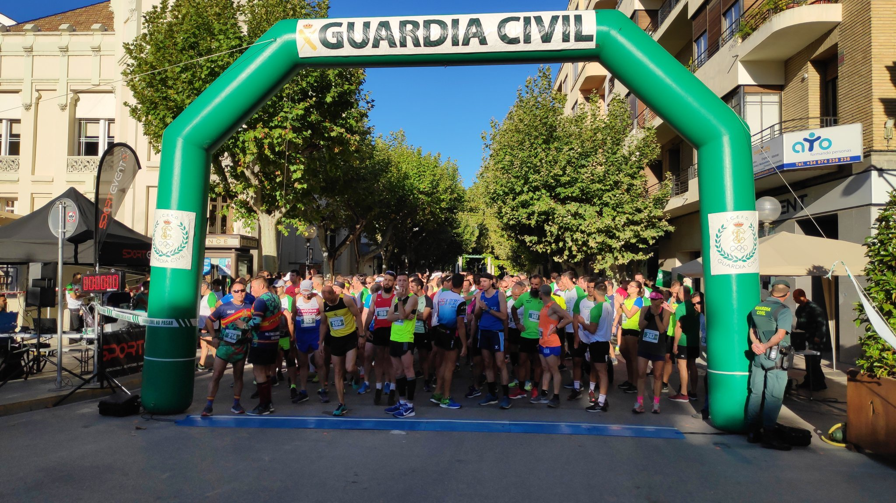
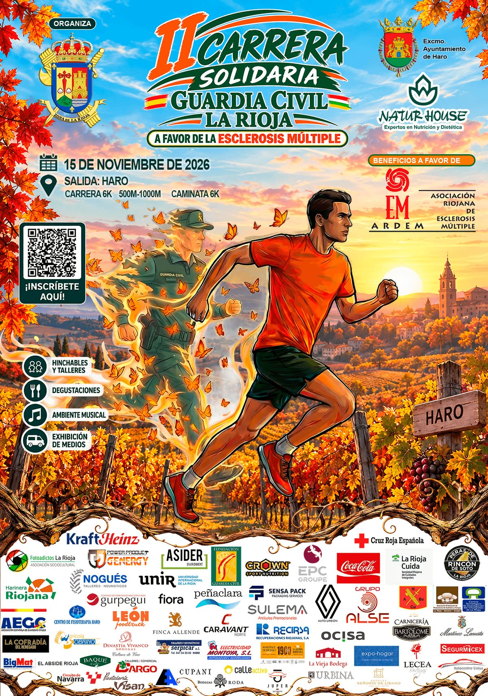
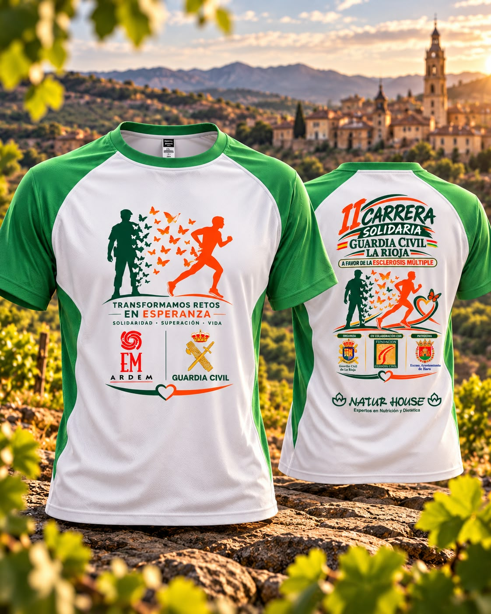
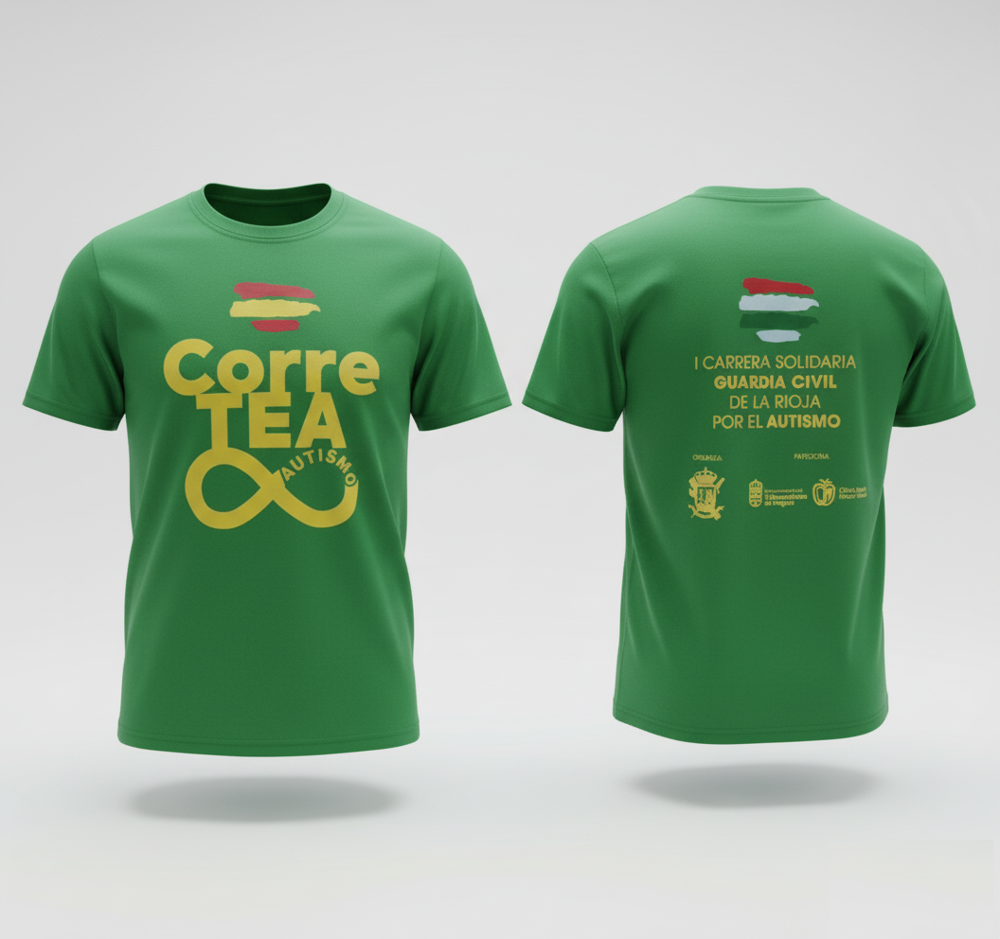
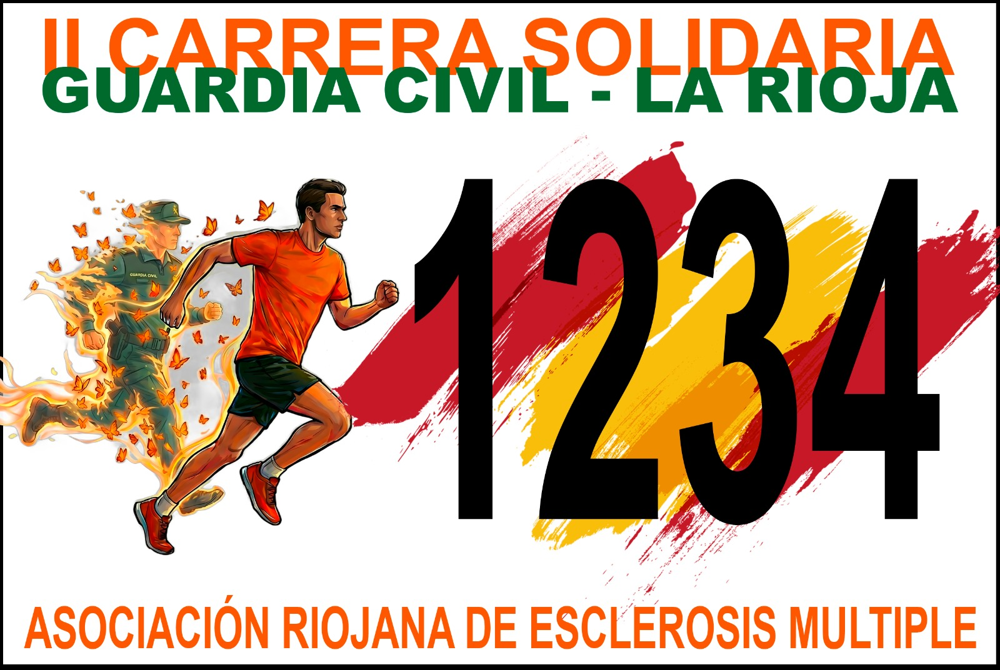
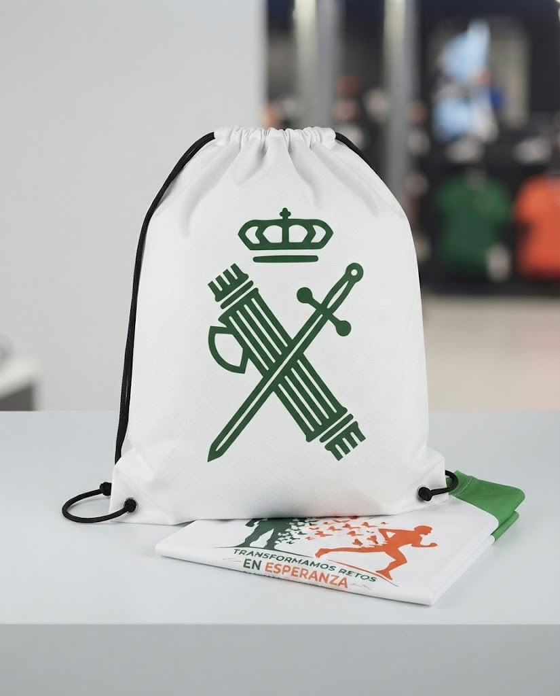

Corre o camina el 15 de noviembre y colabora con ARDEM.


Domingo, 15 de noviembre de 2026
Plaza Central
9:00–18:00 (actividades desde las 10:00)
La recaudación de esta edición se destina a apoyar a la Asociación Riojana de Esclerosis Múltiple (ARDEM).
Asociación Riojana de Esclerosis Múltiple (ARDEM)

Inscríbete hasta el 8 de noviembre de 2026 a las 23:59 en RockTheSport.
Inscríbete
Imágenes del material de esta edición. RockTheSport ofrece la camiseta solidaria como una opción de inscripción por 10 €.


La galería de fotos de la edición 2026 todavía no está disponible.
10.ª Zona de la Guardia Civil de La Rioja